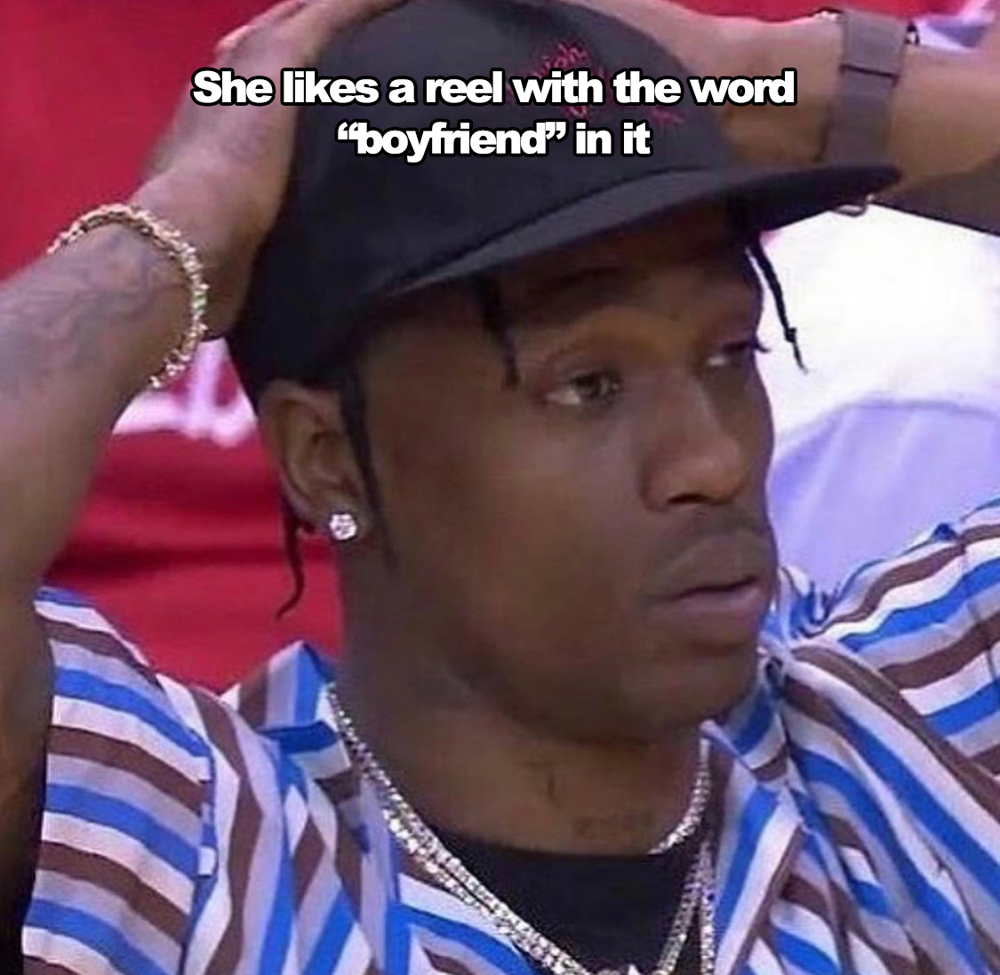
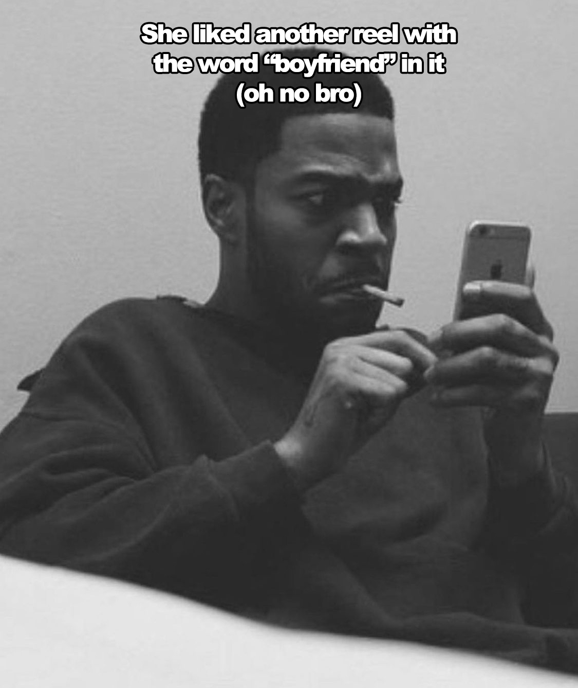
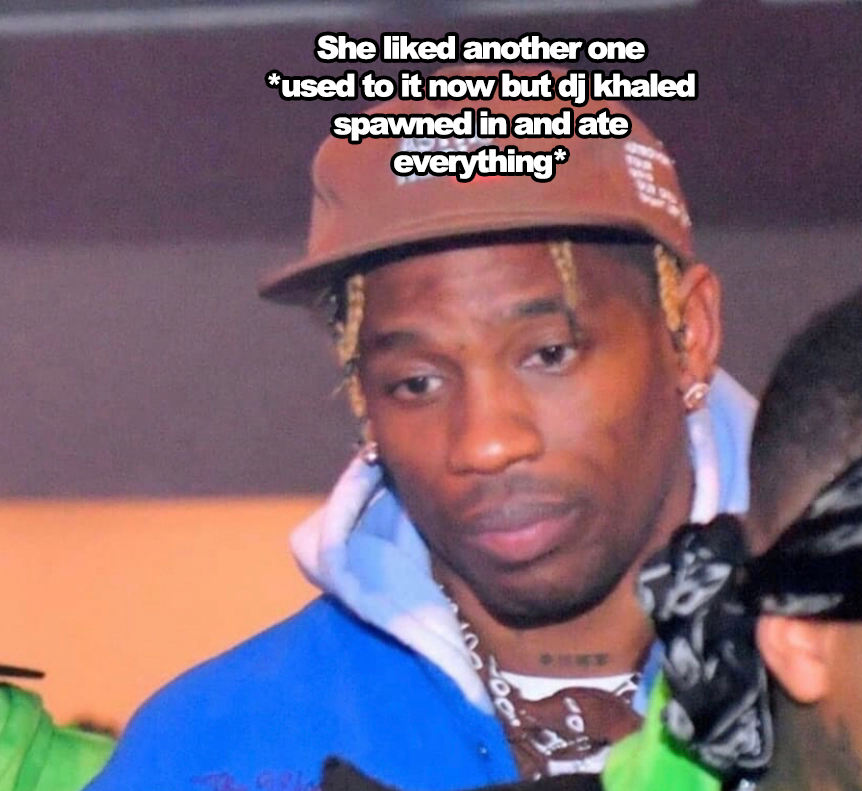

idk I kinda got lost building this but the main idea was to reshoot my shot cause I kinda folded the first time. I really wanted to spend more time improving the writing and making it more interesting but number one I suck at writing and two I get too far ahead of myself then get excited and want to send it to you so I had to meet in the middle cause I can't not show you this now, I was already imagining taking out pictures of you and my car at cool places, I don't even have a car?? Whilst also praying I don't see any soft lanuches on your story, keeping this to myself for two weeks was insanely hard but this should paint a better picture of how much I want you. You got me crushing hard dude.
Pros and Cons
Pros:
I've never had a girlfriend(I think this is a pro)
I've been training for 2 years, went from looking like a stick to looking like a slightly cooler stick.
I can hold your purse while you go shopping.
I have so many cool date ideas. (and I'm down for whatever, matching fits, picnics, that teacup painting thing, you name it I'm there) (If the homies see this I'm lying)
I'm 6ft.
I feel like my common sense to book smart ratio is good. (could just be the people I talk to but you'd be surprised at the amount of smart people with literally zero common sense.)
I'm home alone most of the time for like months so I know how to take care of myself.
As much as I judge the homies for doing this I would 110% abandon them to run to you whenever you called.
I don't really drink so you'll always have a sober driver.
I would definitely wear a t with your face on it.
Cons:
I've never had a girlfriend(in the sense that certain things I should know by now I might not)
I like to be super clean and these two barbarians in my house don't know how to do that so I'll probably never invite you over cause I'll be freaking out over everything.
I'm super awkward around new people so it could take me a day or 17 months to get used to you.
A solid 3.5-4/10 purely based on looks.
Smoke gas way too much but I'm like 100% sure if you told me you can't stand it I'd stop.



Yeah I know super short right but damn dude this took so much more time than I thought it would. I might actually update it but as it started getting better I just kept getting way too excited to show you and I literally couldn't wait anymore.
Initially I was meant to add a slider so you could actually see the code but apparently it just does not want to work and its so late I might genuinely start losing my marbles. Basically its like 900+ lines of code which took around 30hrs+. PS: Feel free to leave a review in the answer box on STAGE 4. This is my first ever live website, so techincally it'd be my first actual review. No pressure or nothing but I'll beat up my little sister if it's bad.
Was not sure if I could link an Apple Music playlist so I had to do it on Spotify.